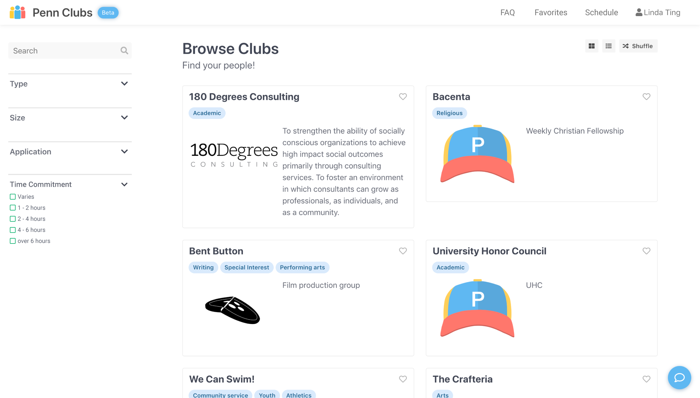
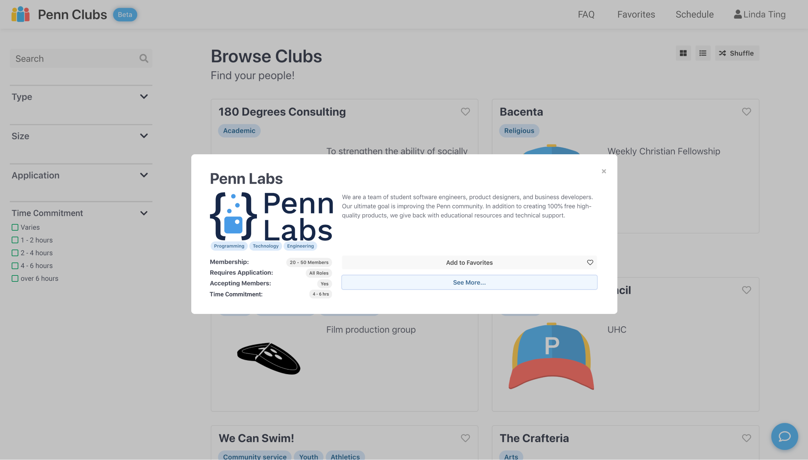
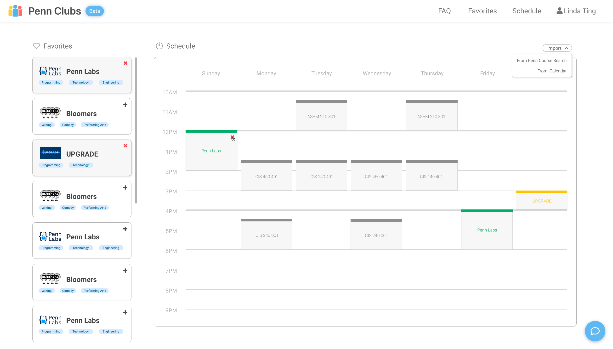
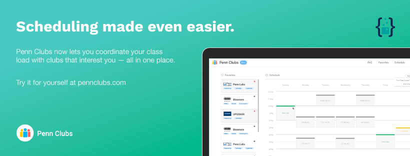

made with 😘 in philly | linda shoutian ting
🧪 penn labs:
I am currently a UI/UX designer for Penn Labs contributing to Penn Mobile Portal and Penn Clubs.
As part of the application process, I was tasked with (1) ideating and designing a new feature for Labs' most recent product — Penn Clubs — and (2) creating a Facebook cover photo to advertise the new feature. Penn Clubs is an online database of all of the clubs and organizations open to students on Penn's campus.
My proposed feature addresses the fact that we, as college students, all lead busy lives. Personally, I never used cloud calendars for planning before college, and I now rely heavily on them whether I'm planning for meetings with professors or just finding time to hangout with a group of friends. My entire life now revolves around my ability to meticulously plan out every day, and I have found that this is often the same case with my friends and peers. Therefore, it is clear to me that the time commitment required of a student should be fully communicated to prospective members prior to the recruitment process.
My proposed solution includes (1) a new tag type that categorizes each club by its average time commitment per week and (2) a scheduling tool that syncs with Penn Labs' Penn Course Plan to allow a student to preview their entire schedule (classes and clubs) in one place.






made with 😘 in philly | linda shoutian ting